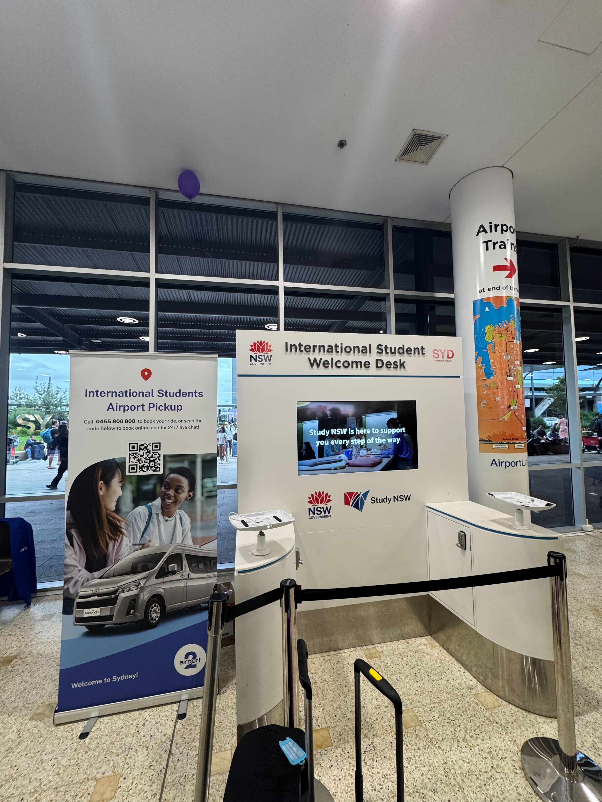

Chapter 01
出发前 · 行李准备
厦门航空 · 单程 · 成都→厦门→悉尼
成都
TFU T2 · 7/14 17:45
TFU T2 · 7/14 17:45
→
厦门
XMN T3 · 中转1h35m
XMN T3 · 中转1h35m
→
悉尼
SYD T1 · 7/15 09:20
SYD T1 · 7/15 09:20
第一段
MF8432 · 2h40m · 737-800
第二段
MF801 · 9h20m · 787-9
总时长
13h35m · 含餐
✅ 行李直达：成都托运→悉尼取。厦门T3同楼中转，无需取行李。
📊 行李配额
⚠️ 以下配额基于厦门航空国际线经济舱标准。 具体配额（件数、限重、尺寸）以你购买机票的航空公司规定为准。不同航司、不同舱位、不同航线可能不同。建议出行前登录航司官网或致电客服确认。
46
托运 kg
2
托运件数
7
登机行李 kg
1
个人物品
| 类型 | 件数 | 限重 | 尺寸 | 放什么 |
|---|---|---|---|---|
| 🧳 托运 | 2件 | 各23kg | 三边和≤158cm | 行李1(海关友好箱)+行李2(杂项) |
| 👜 登机行李 | 1件 | ≤7kg | 55×40×20cm | 旅行包/大号旅行包 |
| 🎒 个人物品 | 1件 | 不称重 | 能塞座位下 | 背包(电脑/证件/充电宝) |
💡 行李箱保护套：淘宝¥15-30买两个。手提电子秤防超重。大号旅行包作为登机行李。
🎒 随身登机清单
绝不能托运 · 落地即用
☐护照(>6个月) · 签证打印件 · CoE+OSHC+Offer+住宿合同
☐驾照+NAATI翻译 · 英文验光单 · 英文处方翻译(如需)
☐笔记本电脑 · 充电宝(≤100Wh 必须随身！) · 备用眼镜+隐形
☐薄外套 · 钱包+AUD现金$1000-2000 · 一支笔(填入境卡)
☐U型枕(长途飞行救命) · 湿厕纸+酒精湿巾(应急清洁)
💊 药品 & 海关申报
托运 · 全部申报YES · 保留原包装
| 物品 | 数量 | 优先级 | 备注 |
|---|---|---|---|
| 头孢/阿莫西林 · 布洛芬 · 对乙酰氨基酚 | 各自用量 | 必带 | 原包装+英文说明书；确认不含伪麻黄碱 |
| 蒙脱石散/氯雷他定/藿香正气水 | 各1盒 | 建议 | 常用药 |
| 创可贴/云南白药/扶他林 | 各适量 | 建议 | 外用 |
⛔ 绝对禁止：白加黑/新康泰克(伪麻黄碱)、复方甘草片(阿片)、连花清瘟。罚款$2,664 AUD。
👔 衣物 & 防晒 & 日用品
| 物品 | 数量 | 优先级 | 原因 |
|---|---|---|---|
| 内裤/内衣 · 袜子(各10双+) | 1-2年量 | 必带 | 澳洲尺码偏大/贵 |
| 秋衣/保暖内衣 · 轻薄羽绒服 | 2-3套/1-2件 | 必带 | 悉尼冬天湿冷 |
| 防雨外套+折叠伞 · 遮阳伞 | 各1 | 必带 | 雨+紫外线双重防护 |
| 防晒面罩+防晒衣 | 各1 | 必带 | 澳洲紫外线极强 |
| 真空压缩袋(手卷式)+真空泵 | 5-8个 | 必带 | 打包神器 |
| 一次性洗脸巾 · 洗衣袋(2-3个) | 3-6个月量 | 建议 | 公用洗衣房必备 |
| 旅行收纳袋套装 · 免打孔挂钩(3-5个) | 1套 | 建议 | 学生公寓不能打孔 |
| 备用眼镜(2副) · 隐形眼镜(半年量) · 指甲刀 | 各 | 必带 | 澳洲配镜$400+ |
| 中性笔+笔芯大量 · 零钱包 · 帆布袋 | 各 | 必带 | 澳洲文具贵/硬币极多 |
🟢 当地买：被子$15-25(Kmart) · 枕头$5-10 · 碗盘$10-20 · 砧板$10 · 台灯$8-15 · 衣架$3-5 · 桌面镜$5-10
💻 电子配件 & 厨房用品
| 物品 | 数量 | 优先级 | 备注 |
|---|---|---|---|
| 澳标转换插头(I型·公牛)+绕线排插(USB) | 2-3个+1个 | 必带 | 公牛/德力西 |
| 数据线(苹果+安卓+Type-C) · 钢化膜 | 各3根+/3-5张 | 必带 | 澳洲$15/根、$20/张 |
| 手机挂绳 · 手提电子秤 · U盘 | 各1 | 建议 | 防丢/防超重/备用 |
| 中式菜刀(十八子/邓家刀) · 筷子(5-10双) | 1把 | 必带·托运 | 澳洲$25-50品质差 |
| 擀面杖+硅胶垫+刮板+蒸笼布 | 各1 | 建议 | 面食套件,轻便 |
| 削皮器+厨房剪刀+磨刀石+保鲜盒 | 各适量 | 建议 |
🟢 悉尼买：炒锅(华超$25-50) · 平底锅+汤锅(Kmart$25-45) · 电饭煲(二手$10-30) · 全部调料(Eastwood华超$70-100)
姜：Coles $25-45/kg → Eastwood华超$15-25/kg → 切片冷冻 → 用一个月。冷冻姜末$3-5/盒。
🚿 过滤花洒
全从国内带 · ~1.1kg · ¥162-310
| 物品 | 淘宝关键词 | 预算¥ |
|---|---|---|
| 过滤花洒头 | 复旦申花/小绿锅 VC除氯 | 80-150 |
| 不锈钢软管1.5m · 免打孔花洒支架 | 花洒软管304 · 花洒支架免打孔吸盘 | 30-55 |
| 万能转接头套装 · 生料带 | 花洒转接头万能4分6分 | 12-25 |
| 水龙头过滤器 | 水龙头过滤器除氯 苏泊尔/九阳 | 40-80 |
🔧 澳洲 G1/2 ≈ 中国 1/2" BSP，直接拧。 老房子带万能转接头。支架必须免打孔！原装花洒保存好退房换回。
📦 海关红线
| ✅ 可以带/寄 | ❌ 绝对不能 |
|---|---|
| 干香料(八角/花椒/桂皮·商业密封) | 鲜姜/鲜蒜/鲜辣椒(带土) |
| 干辣椒/茶叶/干蘑菇/木耳/红枣 | 任何肉类制品(火腿肠/肉松) |
| 酱油/醋/老干妈(商业密封瓶装) | 蛋类及含蛋制品 |
| 火锅底料(清油版·商业包装) | 含牛油/鸡油火锅底料 — 高风险没收 |
🚨 所有食品入境卡打YES申报！不申报罚款$2,664 AUD+签证风险。
📋 出发前最终Checklist
☐护照>6个月？签证+CoE+OSHC+Offer+住宿合同已打印？驾照+NAATI翻译已准备？
☐行李箱1(海关友好箱)+行李箱2(杂项)已打包？行李箱保护套已套好？电子秤确认不超重？
☐随身包：证件+电脑+充电宝+眼镜+笔+U型枕+湿巾？充电宝随身！
☐真空压缩袋+泵已使用？药品保留原包装？花洒套装已打包？中式菜刀已托运？
☐集运包裹已发出？手机开通国际漫游？重要文件电子版存手机+云盘？下载悉尼离线地图？
😱 留学生「后悔清单」
📊 来源：小红书多篇高赞"后悔帖"(@真真Celeste、@橙子大王、@椰椰在lumi、@Freya、@拉面大王等)
😭 最后悔没带
| 物品 | 后悔原因 | 建议 |
|---|---|---|
| 指甲刀套装 | "澳洲$10一个还巨难用" | 必带 |
| 手机钢化膜+贴膜工具 | "店里贴$25，淘宝¥3" | 多囤 |
| 数据线(多根) · 文具(笔+笔芯) | "澳洲贵且是油笔" | 各3根+/大量 |
| 转换插头+排插 | "机场$25一个" | 2-3个 |
| 备用眼镜 · 秋衣/保暖内衣 | "配镜$400+" / "Heattech断码" | 2副/2-3套 |
🤦 最后悔带了
| 物品 | 后悔原因 | 替代 |
|---|---|---|
| 被子+枕头 · 电饭煲 | "Kmart $15-25，占了半个箱子" | Kmart/二手 |
| 大量调料/火锅底料 | "Eastwood全有，海关没收更亏" | 华超买 |
| 加厚羽绒/雪地靴 · 中文教科书 | "不下雪"/"PDF+图书馆够用" | 轻薄/集运 |
Chapter 02
旅途中 · 中转 & 入境
⚠️ 以下中转流程基于厦门航空/厦门高崎T3实际情况。 不同航司、不同机场的中转流程、航站楼、行李政策可能不同。请以你实际乘坐的航司及中转机场的现场指引为准。
你的航班 · 需在厦门转机
第一段
MF8432 · 成都天府→厦门高崎 · 7/14 17:45→20:25 · 2h40m
中转
厦门高崎T3 · 等候1h35m · 行李直达悉尼 · 同楼中转
第二段
MF801 · 厦门高崎→悉尼 · 7/14 22:00→7/15 09:20 · 9h20m
🔄 厦门中转指南（1h35m）
1
下机后走「国际中转」通道
MF8432到达厦门T3 → 跟随「国际/港澳台中转」标识 → 不要出关去取行李！行李已直达悉尼。
2
过海关+安检
出示护照+登机牌 → 国际出发安检。液体单件≤100ml，总量≤1L，装透明袋。
3
直奔MF801登机口
1h35m偏紧但够用。不逛免税店！登机口以机场大屏为准。MF801通常在T3国际出发区。
⚠️ 如MF8432延误：厦航同航司中转，晚点MF801会等。落地后听广播/找地勤。
✈️ 在飞机上（MF801 · 厦门→悉尼）
①
找空姐要入境卡
起飞后或降落前1-2小时，向空乘要 Australian Incoming Passenger Card。厦航一般发中英双语版，可以要中文版。用黑色笔填写（自己带一支）。
💡 如果空乘没主动发，说 "May I have an Incoming Passenger Card, please?"
②
填写入境卡
需填写：姓名(与护照一致)、护照号、航班号MF801、澳洲地址(宿舍地址)、职业(Student)、来澳目的(Study)。
⚠️ 背面申报部分极其重要！食品/药品/动植物/现金相关问题，不确定就选YES。选NO被查到最高罚$4,400甚至取消签证。
💡 任何零食、泡面、茶叶、中成药、保健品 — 请在背面相应问题勾选YES。
③
降落前准备
- 护照和入境卡放随身小包，方便下机后拿出
- 接机确认截图、地址截图准备好
- 澳洲SIM卡换好（如提前买了）
- 上完厕所，下机后可能排队很久
Chapter 03
抵达悉尼 · 机场到宿舍
🚌 麦考瑞大学官方接机（免费）
📌 出发前必做：登录 students.mq.edu.au/study/new-students/international/airport-pickup 提前预约MQ官方免费接机服务。国际新生专属福利，从机场直接送到宿舍。
📋 接机预约回执
✓ 接机预约已确认
Booked on June 30, 2026
航班信息
MF801 · 厦门航空
出发→到达
厦门高崎 (XMN) → 悉尼金斯福德·史密斯 (SYD)
到达时间
2026年7月15日（周三）上午 9:20
到达航站楼
悉尼机场 T1 国际航站楼
乘客
*** · 1人
送至地址
*** Culloden Road, Marsfield
Student Village North Ryde
Student Village North Ryde
费用
$0.00（新生免费）
▶ 路线总览
🛫
厦门高崎 XMN · MF801
飞行约9.5h · 厦航机上餐食+娱乐系统
飞行约9.5h · 厦航机上餐食+娱乐系统
⬇
🛬
悉尼机场 T1
9:20到 → 入境(20-40m) → 行李(15-30m) → 海关(5-15m)
9:20到 → 入境(20-40m) → 行李(15-30m) → 海关(5-15m)
⬇
🤝
Help Desk 碰头
打电话给司机 → 上车
打电话给司机 → 上车
⬇ 约25分钟 · 20公里
🏠
Student Village North Ryde
*** Culloden Road, Marsfield
*** Culloden Road, Marsfield
🗺️ 驾车路线 · 悉尼机场 → Marsfield
🛬 悉尼机场 T1→🏠 Marsfield (MQ附近)约20km · 25分钟
0出发前确认
☐存电话：接机公司 24小时在线（电话见紧急联系卡片）
☐国际漫游：致电运营商开通澳洲漫游（移动10086/联通10010/电信10000）
☐买澳洲SIM卡：淘宝搜 "澳洲旅游卡" ¥30-50，飞机上换好
☐保存截图：预订号、航班、地址都截好图
☐带笔：飞机上填入境卡需要黑色笔
!紧急联系
📞 接机服务 · 24小时在线
📱电话/WhatsApp：*** *** ***（接机公司）
💻Live Chat：接机公司官网右下角
💬微信：❌ 搜索不到，已停用 — 到机场请直接打电话
⏱ 接机 = 落地后1小时（9:20落→约10:20接）
📍 Help Desk前等司机
📍 Help Desk前等司机
1下飞机 → 过海关 → 取行李
1
下飞机，跟着「Arrivals」走
下机后只有一条路，跟着人潮走。跟"Arrivals 到达"和"Baggage Claim 行李提取"指示牌。全程中英双语。约走5-10分钟到Passport Control。
💡 座位靠后的话稍微走快一点，可以排到海关队伍前面。
2
过海关 · 入境检查（Passport Control）
两种通道：
- ✅ SmartGate自助通道：中国新版电子护照(封面有芯片标志)可走，插入护照→取票→面部识别→通过，约1-2分钟
- 👤 人工通道：递护照+入境卡，可能问几个问题
✅ 常见问题："来澳洲做什么？"→ 答：Study at Macquarie University。可出示CoE/Offer Letter。
3
取行李（Baggage Claim）
大屏找到MF801对应的转盘号。机场有免费行李推车。
💡 等行李时可以连机场免费WiFi："Sydney Airport Free WiFi" → 浏览器登录 → 输入姓名邮箱即可。免费4小时。

▲ 悉尼机场 T1 International Student Help Desk — 出关后在这里等司机
4
过海关检疫（Customs）
取完行李后最后一道检查。两个通道：
- 🔴 红色通道（申报通道） — 入境卡勾了YES走这边
- 🟢 绿色通道（无申报通道） — 没东西申报走这边
⚠️ 不确定就申报。隐瞒申报最高罚$4,400甚至取消签证。
2出关后 → 找到接机人
5
到到达大厅 → 连WiFi → 联系接机
走出海关就站在国际到达大厅（Arrivals Hall）。
立刻：
立刻：
- 连机场免费WiFi：Sydney Airport Free WiFi
- 打电话给接机公司：「Hello, I just arrived at Sydney T1, flight MF801. I'm at the International Student Help Desk.」
- 或使用接机公司官网 Live Chat
⚠️ 微信已停用。到机场请直接打电话或Live Chat。
✅ 接机时间=落地后1小时（约10:20），司机知道你的航班会在这个时间到达。
6
到 International Student Help Desk 等司机
位置：到达大厅左侧，Arrivals A（到达口A）正前方。
到了之后：
到了之后：
- 如需澳洲SIM卡，Help Desk可协助快速激活
- 不需要SIM卡就在附近等候
💡 打电话给司机说：「I'm at the International Student Help Desk.」
7
和司机碰头 → 上车出发
司机在以下地点举牌等你：
- 首选：International Student Help Desk 前
- 备选：麦当劳门口（到达大厅右侧，步行不到1分钟）
✅ 等5分钟没见到人？再打电话。
✅ 上车后约25分钟直达Student Village。

▲ 接机服务公司 — 到机场后通过电话联系他们
🗺悉尼机场 T1 平面图（中文标注）
▲ 悉尼机场 T1 Ground Floor 到达层平面图 — 出海关 → Help Desk → 司机碰头
?常见问题
下飞机第一件事做什么？
连机场WiFi + 给接机方打电话。不用急，司机会根据航班到达时间安排。
飞机上没发入境卡怎么办？
主动找空乘要。或下机后去海关路上有放入境卡的台子自取。
没有澳洲手机号怎么联系司机？
用机场免费WiFi打WhatsApp/微信语音，或让Help Desk工作人员帮忙联系。
找不到司机怎么办？
(1) Help Desk等5分钟 (2) 打电话 (3) 找Help Desk工作人员帮忙。
📋 落地前确认清单
☐手机开通国际漫游（移动10086/联通10010/电信10000）
☐提前淘宝买澳洲SIM卡(¥30-50)，飞机上换好
☐截图保存：航班号、住宿地址、接机联系方式
☐药品清单（中英文）+食品清单打印好放随身包
Chapter 04
安顿生活 · MQ周边 & 长期生存
🗺️ MQ周边地图
M2 Motorway
Metro
Epping Rd
🏫 MQ
🛍️ Macquarie Ctr
🥡 Eastwood
🛒 Chatswood
🏘️ Rhodes
📚 Epping
⭐ Marsfield
🏫 MQ→Macquarie Ctr：步行5分钟🥡 Eastwood：公交545路5-10分钟🛒 Chatswood：Metro 10分钟🚆 CBD：Metro约25分钟
🏠 MQ周边租房攻略
📊 来源：小红书 @Ulive悉尼学长学姐 · @方块Jude(MQ住5年)，2025-2026真实租金。
| 区域 | 单间/周 | 通勤 | 亮点 |
|---|---|---|---|
| Macquarie Park | $350-450 | 步行5min | MQ Centre下楼，IT公司多兼职 |
| Marsfield ⭐ | $300-380 | 公交8min | 24h Coles，性价比王 |
| Eastwood 🥡 | $280-350 | 火车12min | 中餐一条街，华超天堂 |
| Epping | $330-400 | 地铁4min | Westfield，安静学霸区 |
🚨 防坑：视频看房！问清Bills(不包≈$100+/月)！押金交Fair Trading！入住拍照记录瑕疵！
💰 月开销预估：$1,700-2,700 AUD(含房租+Bill+伙食+交通)。
📱 落地必办卡 + TFN
| # | 卡 | 花费 | 时间 | Tips |
|---|---|---|---|---|
| 1 | 📱 手机卡 | $10-40/月 | 落地即办 | Vodafone学生$30=50GB；Woolworths Mobile送超市10% off |
| 2 | 🚆 Opal卡 | 充值$20起 | 落地即办 | 刷满8次后半价；周日$2.50封顶！机场站贵$17+ |
| 3 | 🏦 银行卡 | 免费 | 3天内 | Commonwealth或ANZ |
| 4 | 🎓 学生卡 | 免费 | 到校当天 | MQ Student Centre |
| 5 | 💰 TFN税号 | 免费 | 尽快(2-4周) | ATO官网，打工必备 |
💰 省钱 & 就医
🛒 超市
| Aldi采购 | 比Coles便宜20-30% |
| Coles/Woolies半价 | 每周三更新，囤货50% off |
| 华人区买菜(Eastwood) | 比Coles便宜30-50% |
| UNiDAYS学生折扣 | JB Hi-Fi/Apple/Spotify/KFC 10-20% off |
🚆 交通
| Opal刷满8次 | 第9次起半价 |
| 周日$2.50封顶 | 全天不限次 |
🏥 就医
MQ校内Campus Wellbeing：18 Wally's Walk · (02)9812 3944。Bulk Bill=不用垫钱。
🚨 紧急拨打000。附近医院：Ryde Hospital。语言不通：TIS National 131 450(免费翻译)。
📚 信息来源 & 真实性声明
✅ 已验证航班信息：MF8432/MF801 · 厦门航空 · 成都→厦门→悉尼。
✅ 已验证海关规则：ABF官网(abf.gov.au)。罚款$2,664为2024年Infringement Notice标准。
✅ 已验证MQ租房价格：小红书 @Ulive(688a20ec) · @方块Jude(69e711ff)。
✅ 已验证华超香料价格：Web search交叉验证Coles/Woolworths vs 小红书华超实地探访。
✅ 已验证花洒接口标准：澳洲AS/NZS BSP螺纹。G1/2≈1/2"兼容性经工程标准验证。小红书@碳酸实测。
✅ 已验证接机信息：改编自真人接机确认回执。MQ官方接机：students.mq.edu.au/study/new-students/international/airport-pickup。
⚠️ 基于经验Kmart/IKEA/华超价格：公开零售目录+留学生经验帖。以实际门店价为准。
⚠️ 基于经验衣物/电子/日用品价格对比：综合知乎、小红书、B站数十篇经验帖。
⚠️ 未独立验证MQ Student Village具体规定(花洒/墙面等)：建议入住时确认。
⚠️ 未独立验证接机公司当前状态：微信可能已停用。建议出发前电话确认服务。
📋 Author: 郑佳骐KAI · 编制于2026年7月 · 出发前建议重新确认政策无变化
✅ 已验证=经官方/多方验证 · ⚠️ 基于经验=多方经验汇总 · ⚠️ 未验证=建议自行确认